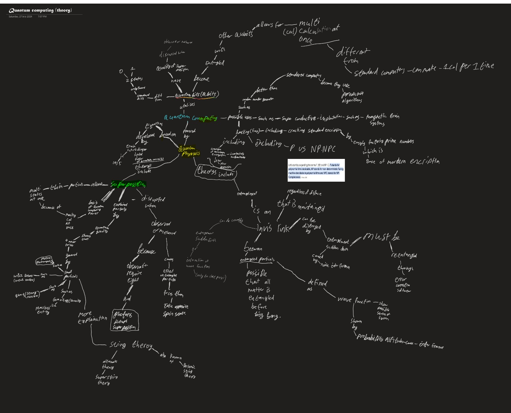

Academic Achievement
Scholastic milestones, certifications, and university-level recognition.
View Academic DetailsO-Level student specialising in infrastructure security, defensive systems, and applied cryptography. I build practical tools from live packet capture to encrypted password vaults.
I focus on defensive security, system monitoring, and applied cryptography. As a 3rd Sergeant in NCC and a Young Engineer Award recipient, I bring teamwork, discipline, and practical problem solving.
Scholastic milestones, certifications, and university-level recognition.
View Academic DetailsLeadership, design challenges, and extracurricular awards that extend beyond the classroom.
View Non-Academic DetailsHackathons, competitions, and training programs that shaped my technical mindset.
View Enrichment Details


Python-based intrusion detection with live packet capture, signature matching, and structured alert reporting.
View Repo
A math engine with real-time parsing, implicit multiplication, degree-based trigonometry, and interactive plotting.
View Repo
Python-based keylogger with encrypted logging, stealth capabilities, and PBKDF2 key derivation for secure storage.
View Repo
A client-side vault with master authentication, AES encryption, and auto-clear clipboard protection.
View RepoNetwork packet sniffer with protocol analysis, packet filtering, and real-time traffic monitoring.
View RepoClassic Caesar cipher encryption and decryption tool with support for custom shift values and frequency analysis.
View RepoC# keylogger with stealth features, encrypted logging, and low-level keyboard hooking for comprehensive monitoring.
View RepoPing of death network attack tool in C# — demonstrates oversized ICMP packet vulnerabilities and defensive strategies.
View RepoNetwork port scanning tool with service detection, banner grabbing, and multi-threaded scanning for efficiency.
View RepoPassword strength analysis and scoring tool with entropy calculation, dictionary checks, and pattern detection.
View RepoRemote command execution framework with secure authentication, command history, and real-time output streaming.
View RepoManhattan distance calculator for pathfinding and grid-based navigation with visualisation and multi-point support.
View RepoFile integrity verification tool using cryptographic hashing (SHA-256, MD5) to detect unauthorized changes and tampering.
View RepoMy own portfolio site — built with HTML, CSS, and JavaScript to showcase my cybersecurity projects and research.
View Repo
Exploratory mind map breaking down quantum mechanics, qubits, entanglement, and impact on cryptography (RSA, Shor's algorithm).
Explore Project FilesAnalysis of WannaCry-style threats and defensive strategies for modern systems.
View SlidesResearch into secure system monitoring, traffic filtering, and defensive automation.
View ReportTechnical review of AES-256-GCM, PBKDF2, and secure data isolation.
View ResearchKelvin Goh, Sports Leaders Council OIC
Beatty Secondary School
"I am honoured to recommend Joel, one of our Sports Leaders, whose responsibility, resilience, adaptability, and empathy are commendable. Joel has been an outstanding Sports Leader who has made significant contributions to the school through his dedication, enthusiasm, and commitment to service."
"One of Joel's key strengths is his ability to motivate and encourage his peers. During events, he leads by example and helps to foster a positive and inclusive environment. His energy and encouragement inspire those around him to contribute their best, making him a respected and influential leader among his peers."
"Through his service, Joel has demonstrated the qualities of a responsible, resourceful, and caring leader. His contributions have positively impacted the school community, and he has served as a positive role model for his fellow students."
If you find a bug or have a project idea or suggestions, feel free to reach out! I'm open to collaborations, mentorship, and discussions on cybersecurity, engineering, and technology.